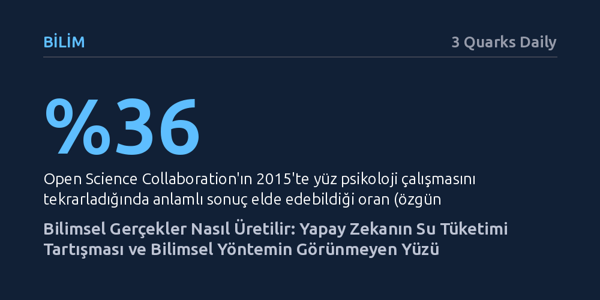

BILIM · 3 Quarks Daily · 2026-09-08
Ders kitaplarındaki basmakalıp bilimsel yöntem anlatısı, gerçeklerin nasıl sınandığını açıklamaya yetmiyor; bir iddianın güvenilirliği tam olarak neyin ölçüldüğüne, yöntemin şeffaflığına ve bağımsız tekrarlanabilirliğe bağlıdır. Yapay zekanın her soruda bir şişe su tükettiği iddiası da bu yöntemsel denetimlerden geçememektedir.
Sosyal medyada veya haber bültenlerinde bilimsel bir araştırmaya dayandırılan sansasyonel iddiaların doğruluğunu, popüler kabuller yerine neyin ölçüldüğü, verilerin şeffaflığı ve bağımsız tekrarlanabilirlik ölçütleriyle sorgulamayı sağlar.

Her şey bir üniversite öğrencisinin ders sonrasında sorduğu görünüşte basit bir soruyla başlıyor: "Yapay zekaya her soru sorduğumda gerçekten bir şişe su mu harcanıyor?" Öğrenci bu iddiayı bir sosyal medya videosunda görmüştür; video bir gazete haberine, haber ise akademik bir araştırmaya dayanmaktadır. Çevresindeki herkes sistemlerin tükettiği devasa su miktarlarından bahsetmektedir. Öğrencinin bilgiye erişim sorunu yoktur; eksik olan şey, elindeki bilginin doğruluğunu, ne derece güven hak ettiğini ve hangi kaynaklara itibar edilebileceğini tartacak sağlam bir değerlendirme yöntemidir. Akıllı telefonlarla büyüyen dijital yerliler dahi bu baş döndürücü enformasyon akışı içinde yön bulmakta zorlanmaktadır.
Bu durum, kurumlara duyulan güvensizliğin derinleştiği ve genel eğitimin değerinin sorgulandığı bir döneme denk gelmektedir. Yapay zekanın neredeyse her konuda doğruyla yanlışı aynı özgüvenle sunması ve insanların denetleyebileceğinden çok daha hızlı içerik üretmesi sorunu daha da yakıcı kılmaktadır. Tam da bu noktada fen bilimleri eğitiminin asıl işlevi açığa çıkar: Bilim, formül ezberletmek yerine farklı alanlara uyarlanabilecek bir düşünme disiplini kazandırır.
Ne var ki okullarda öğretilen "soru sor, hipotez kur, test et, analiz et ve sonuca var" şeklindeki beş adımlı bilimsel yöntem şablonu son derece yüzeyseldir. Bu basmakalıp formül, gerçeklerin nasıl inşa edildiğini ve iddiaların hatalardan nasıl ayıklandığını açıklamakta yetersiz kalmaktadır. Gerçek bilimin işleyişini kavramak için, ders kitaplarının dışarıda bıraktığı derin mekanizmaları incelemek gerekir.
İnsanlık bilimsel süreçten önce içgüdülere, kişisel deneyimlere, geleneklere ve mantıksal akıl yürütmeye güvendi. Ancak bunların her biri ciddi yanılgılar barındırır. Kişisel deneyim, iyi bir sonucun hemen öncesindeki olaya nedensellik atfetmeye meyillidir; yavaş gelişen ya da olasılıkları değiştiren nedenleri kavramakta yetersiz kalır. Gelenekler ise yanlışları asırlarca koruyabilir; nitekim kan akıtma (hacamat) yöntemi, hastanın bu müdahale olmasa da iyileşebileceği gerçeğini gölgeleyerek yüzyıllar boyunca tıp uygulaması olarak sürdürülmüştür. Mantık ise tek başına geçerli olsa bile, başlangıç önermelerinin doğruluğunu temin edemez.
Ders kitaplarındaki "varsayımlarını gerçeklikle karşılaştır" öğüdü de tek başına yeterli değildir; çünkü sıradan gözlem çoğu zaman yanlış teorileri destekler. Aristoteles, ağır cisimlerin ağırlıklarıyla orantılı biçimde daha hızlı düştüğünü öne sürmüştü. Bir taş ile bir yaprağı aynı anda yere bıraktığınızda elde ettiğiniz sıradan gözlem, Aristoteles'in bu hatalı fikrini haklı çıkarır gibi görünür. Aynı şekilde gökyüzüne baktığınızda Güneş'in sabit bir Dünya etrafında döndüğü izlenimine kapılırsınız. Yalın algı, yanıltıcıdır.
Bilimsel yöntemin asıl devrimi, gözlemi iddiaya çürütülme şansı tanıyacak biçimde kurgulamaktır. Bunun için ya soruyu perdeleyen etkenler ayıklanır (örneğin hava direncinin vakumla ortadan kaldırılması) ya da rakip açıklamaların farklı sonuçlar öngördüğü doğal gözlemler aranır. Charles Darwin'in bir mektubunda belirttiği gibi, "bütün gözlemler, bir işe yarayacaksa, bir görüşün lehinde ya da aleyhinde olmalıdır." Ayrıca araştırmacının kendi beklentilerini sürece karıştırmaması gerekir; nitekim 1948'deki tüberküloz streptomisin denemelerinde hastaların hangi gruba atanacağı mühürlü zarflardaki rastgele sayılarla gizlenerek doktorların tarafgirliği engellenmiştir.
Aristoteles'in serbest düşme teorisine yönelik ilk ciddi sınama 17. yüzyıldan çok önce, 6. yüzyıl İskenderiyesi'nde John Philoponus tarafından yapılmıştı. Farklı ağırlıktaki iki nesneyi aynı yükseklikten bırakan Philoponus, düşme süreleri arasındaki farkın neredeyse hissedilmeyecek kadar az olduğunu kaydetmişti. Ancak bu tür bireysel denemelerin süreklilik kazanması ve kolektif bir bilgi birikimine dönüşmesi, bilginin kurumsallaşmasıyla mümkün oldu.
1660'ta Londra'da kurulan Kraliyet Cemiyeti (The Royal Society), "Nullius in verba" (kimsenin sözüne güvenme) ilkesini benimsedi. 1665'te yayımlanmaya başlayan Philosophical Transactions dergisiyle birlikte bulguların kamuoyuna açık biçimde paylaşılması kural haline geldi. Bu sayede bir araştırmacı buluşunun önceliğini tescillerken, iddiasını rakiplerinin ve diğer bilim insanlarının bağımsız denetimine, eleştirisine ve tekrarlama girişimlerine açmak zorunda kalıyordu.
Fakat bir çalışmanın hakemli bir dergide yayımlanması bile doğruluğunun mutlak garantisi değildir. Hakemler sunulan yöntemi ve çıkarımları inceler, ancak deneyi baştan yapmazlar. 2015 yılında Open Science Collaboration tarafından yürütülen kapsamlı bir çalışmada, prestijli psikoloji dergilerinde yayımlanmış 100 araştırma birebir tekrarlandı. Orijinal çalışmaların yüzde 97'si istatistiksel olarak anlamlı sonuçlar bildirmişken, tekrarlanan araştırmalarda bu oran yüzde 36'ya geriledi ve tespit edilen etki büyüklükleri ortalama yarı yarıya düştü. Dolayısıyla bir iddianın gerçeklik payı, ancak farklı araştırmacıların bağımsız yöntemlerle aynı sonuca ulaşmasıyla güçlenir.
Bu yöntemsel süzgeci baştaki şişe su iddiasına uyguladığımızda ilk sormamız gereken soru şudur: "Tam olarak ne ölçüldü?" Bir chatbot sorusu standart bir hesaplama birimi olmadığı gibi, su tüketimi de duruma göre çok farklı tanımlanır. UC Riverside araştırmacılarının 2023 tarihli çalışması, 20 ila 50 soru-cevap için yarım litre su tüketildiğini tahmin etmişti. Üstelik bu hesaba veri merkezinin doğrudan tükettiği suyun yanı sıra, elektriğin üretimi sırasında harcanan su da dahil edilmişti. Yani tek bir soru değil, onlarca konuşmaya yayılan toplam bir ayak izi söz konusuydu.
Buna karşılık Washington Post'un 2024'teki bir hesabı, 100 kelimelik bir e-posta üretimi için 140 vat-saat elektrik harcandığını varsayarak 519 mililitre su tüketimi öngördü. Ancak Google'ın Mayıs 2025 verileri, ortalama bir Gemini metin isteminin yalnızca 0,26 mililitre (yaklaşık beş damla) su tükettiğini ortaya koydu. Buradaki uçurum sadece verimlilik artışından kaynaklanmıyor; Google yalnızca tesis içindeki doğrudan buharlaşmayı hesaplarken elektrik tedarik zincirini dışarıda tuttu. Neyin sayıldığını ve hangi varsayımların kullanıldığını bilmeden rakamları kıyaslamak imkansızdır.
İkinci ve üçüncü adımlar ise yöntemin şeffaflığı ve bağımsız doğrulamadır. Google hesaplama mantığını yayımlasa da bağımsız araştırmacıların tüm hesabı tekrarlamasına yarayacak ham operasyonel verileri paylaşmamaktadır. Yine de bağımsız teyitler yavaş yavaş şekillenmektedir: Epoch AI'ın bağımsız modellemesi bir metin sorgusunun yaklaşık 0,3 vat-saat elektrik tükettiğini bulurken, Google kendi altyapısında bu değeri 0,24 vat-saat olarak ölçmüştür. Bu iki bağımsız bulgunun örtüşmesi, metin sorgularının vat-saatin çok küçük bir kesrini harcadığı tezini güçlendirir; bu da Washington Post'un kullandığı 140 vat-saatlik varsayımın gerçeğin yüzlerce katı üzerinde kaldığını gösterir. On ayrı mecrada aynı hesaplamanın papağan gibi tekrarlanması kanıtı güçlendirmez; güveni artıran şey, hatayı bulma fırsatına sahip bağımsız araştırmaların ortak bir noktada buluşmasıdır.